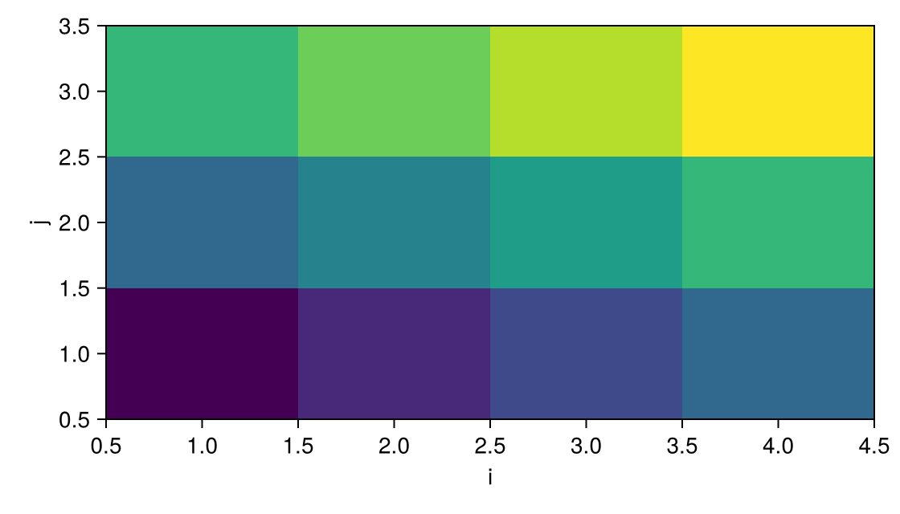

Inspect a grid
Hover a heatmap or image cell and the tooltip reads (i,j) = value. Click it and your notebook gets the cell's indices and value.
Notebook as text
Click a cell, and the last cell shows its indices and value.
Create the heatmap the way you normally would, and end the cell with nothing so Pluto doesn't show the figure twice. masque makes each cell clickable.
begin
z = [
4.0 7.0 10.0
5.0 8.0 11.0
6.0 9.0 12.0
7.0 10.0 13.0
]
fig = Figure(size = (560, 320))
ax = Axis(fig[1, 1]; xlabel = "i", ylabel = "j")
p = heatmap!(ax, 1:4, 1:3, z)
nothing
end@bind pick saves a click in pick, while hovering over a cell only shows its value and leaves pick as it was.
@bind pick masque(fig)
pick starts as nothing, and this cell responds when you click the heatmap. After a click, pick.i and pick.j are the cell's indices in z, so z[pick] is the clicked cell's value. Makie draws z's first index along x, so pick.i counts across and pick.j counts up.
if isnothing(pick)
"click a cell"
else
"z[$(pick.i), $(pick.j)] = $(pick.value)"
endclick a cellHover and click cells
masque(fig) makes every heatmap! and image! interactive. Each grid gets a layer id, :cells for the first and :cells_2 for the second, which a selects box names and pick.layer reports. To give a grid a name of your own, for example when a figure has two grids, pass the plot to interactables with an id:
@bind pick masque(fig, interactables(p; id = :temps))A click makes pick a GridCellEvent. pick.i is the cell's first index in the matrix you plotted and pick.j its second, so z[pick] is the same as z[pick.i, pick.j]. Makie draws the first index along x and the second along y. pick.value is the cell's value, and the clicked cell stays highlighted.
Label cells
To show your own data for each cell, such as the names along each side of a contact map or correlation matrix, pass payloads: a function of the cell's i and j, or a matrix the same size as the one you plotted. The tooltip then lists the payload's fields and the cell's value, and a template can use them next to i, j, and value:
names = ["F17", "I24", "K31"]
p = heatmap!(ax, 1:3, 1:3, contacts)
@bind pick masque(fig, interactables(p;
payloads = (i, j) -> (; x = names[i], y = names[j]),
tooltip = masque"($(x), $(y)) = $(value)"))Name the fields after the axes, because i runs along x and j along y. Hovering a cell reads (F17, I24) = 0.31. A click puts the cell's payload in pick, so pick.x and pick.y read it directly, as pick.i and pick.j do.
Every cell's payload is sent with the figure, even on a large image, where the grid otherwise sends only enough values to fill the screen. A short label on every cell of a 200 × 200 heatmap makes the figure several times larger, and a 1000 × 1000 image runs to tens of megabytes. On a big grid, keep the data in Julia and look it up with pick, as in names[pick.i].
Make a grid from edges and values
If you have edges and values instead of a plot, pass the x edges, the y edges and the values to GridInteractable. Each edge vector must be monotonic, either ascending or descending, and the values form a matrix of size (length(xedges) - 1, length(yedges) - 1):
cells = GridInteractable(ax, 0.5:1:4.5, 0.5:1:3.5, z; id = :cells)Large grids
A 4000 × 4000 heatmap works without any setting. When its cells are smaller than a screen pixel, hovering shows the cell under the pointer and its value, and a click still reports the cell's true i and j.
A color image has no single value per cell, so hovering or clicking it reports i and j with value = nothing, at any size. To read a number instead, pass a GridInteractable with a grid of the values you want, such as each pixel's intensity, and give it the image's layer id, such as id = :cells, so it takes the image's place.
Brush a block of cells
To select a block of cells by dragging a box over them, pass an ROIInteractable to masque, with selects naming the grid's layer id:
box = ROIInteractable(ax; bounds = (1.0, 3.0, 1.0, 2.0), selects = :cells)
@bind win masque(fig, box)When you release the box, win is a GridWindowEvent for the block of cells under it. win.i1:win.i2 is the range of the matrix's first index, drawn along x, and win.j1:win.j2 the range of its second index, drawn along y, so z[win] is z[win.i1:win.i2, win.j1:win.j2], that block of the matrix.
A box that misses the grid still gives a GridWindowEvent, with empty ranges (win.i1:win.i2 is 1:0), so z[win] is an empty matrix rather than an error.
While the box selects the grid, clicking a cell shows its tooltip but does not change win, which stays the box's block. The one exception, an axis readout in the same widget, is in Brush a region.
Where to go next
- Read coordinates: read values from the colorbar next to a heatmap
- Supported plots and axes: which axes a heatmap works on
- Keyboard and screen readers: what the keyboard reaches